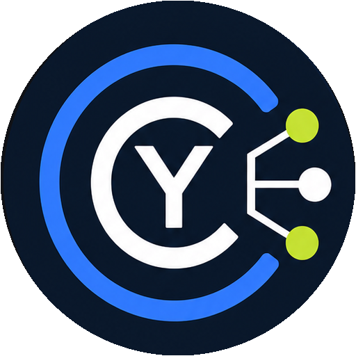

CyTaskCLIENT DESKTOP
Tes projets, en équipe ou entièrement en local.
Ouvre un serveur CyTask ou travaille dans un simple dossier. Ce dossier peut ensuite être partagé par Syncthing ou par le moteur Sync de CyRevision.
- 01 Dossier local, sans serveur à administrer
- 02 Snapshots immuables compatibles Syncthing
- 03 Serveur d’équipe Windows, Linux et macOS
OUVERTURE
Choisir un espace
Local pour tes projets personnels, serveur pour une équipe centralisée.
Espaces récents
Les sessions, jetons et secrets restent propres à cet ordinateur.